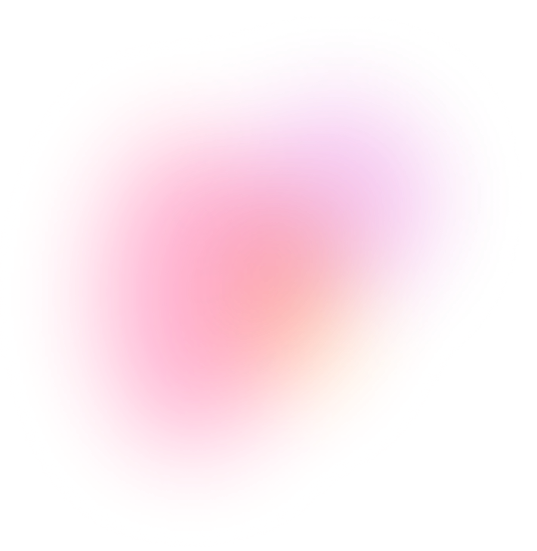
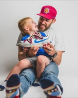

ML-Driven Creator Recommendations
Brands faced significant friction in sourcing creators for partnership ads, one of Instagram's highest-impact ad formats. I identified an opportunity to apply machine learning (ML) to creator-brand matching at scale and drove the MVP from concept to launch.
Key Results
Instagram's creator marketplace allows brands to discover creators and their content.


Creator discovery was slow and subjective — it was hard to evaluate which creators truly aligned with a brand’s values.
In paid marketing, brands rely on niche creators to produce content that feels authentic and drives ad performance. However, the marketplace operated as a passive directory—77% of searches returned no matches, agencies spent up to 1.5 months sourcing creators, and brands were left doing the heavy lifting to find the right creators.
Creator content buried in the layout
For paid marketing, content quality matters. But the creator card was built around creator stats like follower count, location, and category, with no way to preview the content itself, leaving brands unable to evaluate what actually drives results.

Manual creator sourcing
Sourcing and evaluating creators was highly manual — often outsourced entirely to third-party agencies — making it the biggest pain point in running partnership ads efficiently.

Lack of visibility on brand partnerships
A creator's track record partnering with brands or posting branded content is a strong signal of how likely their content is to perform as a partnership ad. But the discovery experience didn't surface this history at all, making it hard for brands to gauge the probability that a creator's content would convert into a successful partnership ad.

Leveraging Meta’s rich data to power ad-optimized, ML-driven recommendations would increase brand-creator matches.
I identified a critical opportunity: leverage Meta's ML capabilities to intelligently surface creators whose content would drive the highest ad conversions — directly fueling creator marketplace's strategic pivot toward partnership ads, Instagram's fastest-growing ad format.

From Brainstorm to Strategic Priorities
I led cross-functional ideation to generate 80+ ideas, translated the most promising concepts into prototypes, and aligned leadership around matchmaking as the highest-leverage opportunity in the mid-funnel.
Content-first discovery
Use machine learning to surface the creator's top-performing post that aligns with a brand's values and objectives.

ad__sneaksThis creator has partnered with 3 brands similar to yours.
40K followers • 32K accounts engaged
Intelligent matchmaking
Describe a campaign in plain language and instantly discover relevant creators or content.
A dynamic “why this creator” line
The supporting line shows why the model ranked this creator. Each reason maps to a signal, making an opaque ranking legible.


Rebuilding the Creator Card, Signal by Signal
The creator card is the atomic unit of discovery, scanned dozens of times per session. While the original design emphasized the creator’s bio, brands were really evaluating content. That forced them to open countless profiles just to judge brand fit. I reimagined the card around a single job-to-be-done: help brands instantly determine whether a creator’s content is right for their brand.

Native Reels aspect ratio
Too tall to scan in a grid; Save/Not interested actions buried under an ellipsis.

Surface top content
One scannable content unit — ad metrics and feedback loop built in.

Expand on the content
Extra posts cluttered the card and buried the standout content.
I weighed each option against ads-focus, scannability, feasibility, and scalability.

Lead with the work
The card opens with the creator’s top-performing post — the thing a brand is actually buying — not a follower count. In partnership ads, the content is the product.
Reach meets trust
“40K followers · 32K accounts engaged” — followers are reach, accounts engaged are trust. Size and quality, in one line.
Actions as a training signal
Not Interested / Message / Save — the moves brands make while scanning. Not Interested comes first: it clears poor fits fast and trains the model to show fewer like them.
Closing the Personalization Loop
I partnered with ML and Data Science to build an ML-powered recommendation model that personalized creator discovery through top-performing, ad-ready content. I also introduced a “Not Interested” feedback mechanism, turning every dismissal into a learning signal that continuously improved recommendation quality.
“Not Interested” → Explicit negative feedback signal → More personalized recommendations
Visuals recreated to respect Meta confidentiality.
Laying the Foundation for an ML-Driven creator marketplace Centered on Partnership Ads
The feature launched in February 2024 — lifting engagement between brands and creators, growing Partnership Ads revenue, and enabling thousands of new partnerships across global markets.
+158% brand↔creator engagement
In a controlled A/B test, the content-first recommendation surface lifted engagement between brands and creators 158% over the existing experience.
+415% ARR YoY Growth
Annual Recurring Revenue grew 415% year over year as higher-converting brand-creator matches scaled across the marketplace.
4.6K brand↔creator Partnerships
4,600 brand↔creator partnerships formed since launch — across new markets and advertisers like TEMU, SHEIN, and Amazon.


“In Alpha testing with 10 brands, the new recommendations surface was rated extremely intuitive with zero functionality issues. 100% of partners said the ability to narrow down and inform creator recommendations would increase the value they experience with the product.”
Alpha Test Results
What I Learned
Recommendations alone aren't enough
After launch, brands wanted more control — not just passive recommendations. This led to a follow-up design merging search and recommendations into one experience, letting brands refine ML suggestions on their own terms.
Ad performance ≠ content quality
A creator can meet every partnership ads criterion and still produce content that doesn't resonate. The real challenge was balancing ad conversions with authentic, high-quality content — too complex for MVP but essential for long-term trust.
Understanding the workflows shaped the strategy
Mapping out how brands and agencies actually sourced and vetted creators — the back-and-forth, the manual handoffs, the disconnected tools — revealed exactly where the matchmaking process broke down. That understanding directly shaped the strategy for streamlining it with ML.